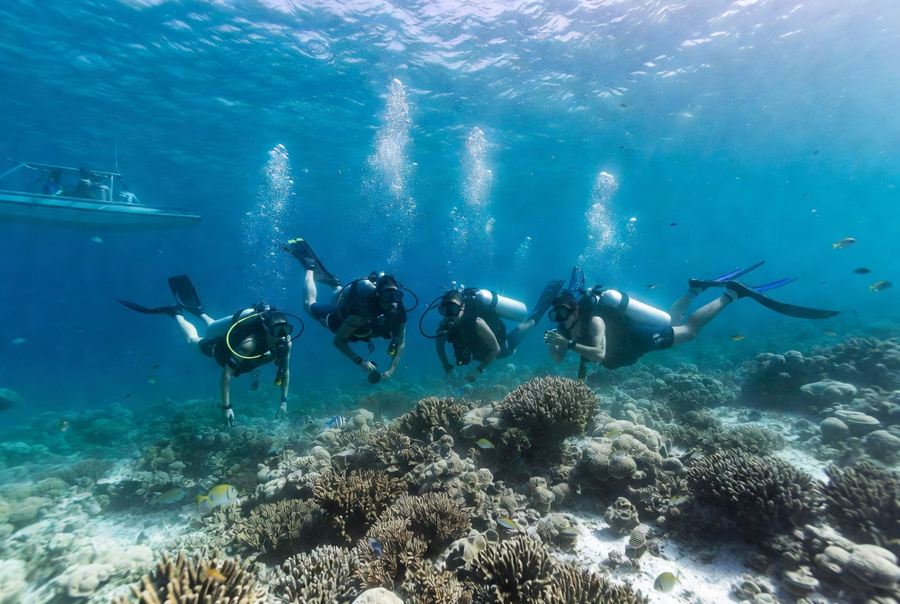
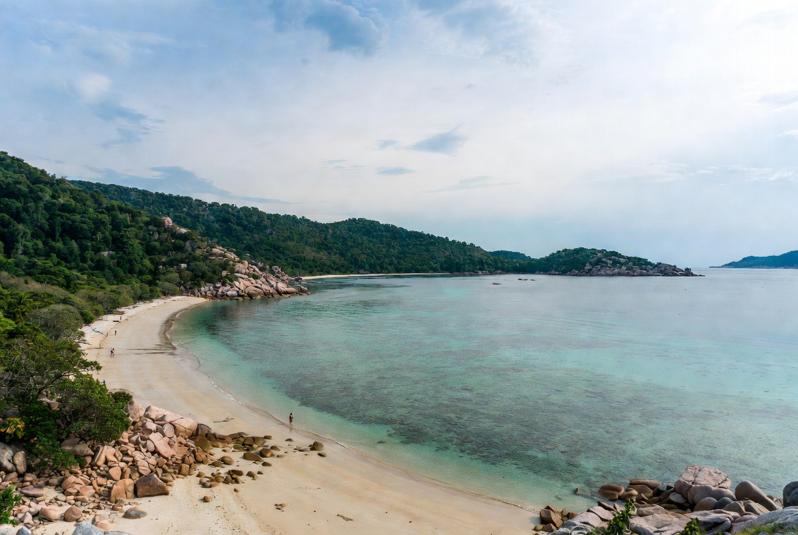

Koh Tao Travel Guide
Koh Tao is a small island north of Koh Phangan and Koh Samui, famous above all for diving. It has become one of the most popular places in Thailand to learn scuba, thanks to relatively calm conditions, many dive schools and affordable courses. Beyond the underwater world, the island offers clear water for snorkelling, a handful of nice beaches, viewpoints and a friendly traveller atmosphere. It is more compact and less developed than Samui, but still busy in the main areas during peak season.
How to Get There
There is no airport on Koh Tao. Everyone arrives by ferry.
From Koh Samui
High-speed ferries (Lomprayah and others) take about 2–2.5 hours, usually stopping at Koh Phangan on the way. This is the most convenient route if you are already in the Samui area or flying into Samui Airport.
From the mainland
The main departure point is Chumphon. Ferries and catamarans take roughly 1.5–2 hours. Many travellers take an overnight bus or train from Bangkok to Chumphon and continue by boat the next morning. Combined bus-and-ferry tickets are widely available.
Boats arrive at Mae Haad Pier. From there, taxis, scooters and walking cover the short distances around the island.

Climate & Best Time to Visit
Koh Tao sits in the Gulf of Thailand, so its weather pattern differs from the Andaman coast.
Best time: February to April
Generally the driest period with the calmest seas and best visibility for diving and snorkelling. January is also good.
Good alternative: July to September
Often pleasant with many sunny days and still decent underwater conditions. Popular with summer travellers.
Wettest period: October to November
The northeast monsoon can bring heavier rain and rougher seas. Some ferry services may be affected. December improves as the month goes on.

What You’ll Love Doing Here
Diving is the heart of Koh Tao. The island has dozens of dive schools offering Open Water courses, advanced training and fun dives. Sites range from easy shallow reefs to deeper pinnacles. Whale sharks are sometimes seen, especially around March–May and September–October, though never guaranteed.
Sairee Beach is the main strip — long, west-facing, with restaurants, bars and dive shops lined up along the sand. It is the social centre and the best place for sunsets. Mae Haad is the pier area and a practical base. Chalok Baan Kao in the south is quieter and more relaxed.

Snorkelling is excellent in several bays, including Shark Bay, Ao Leuk and around Koh Nang Yuan. The short boat trip to Koh Nang Yuan is one of the island’s highlights — three small beaches connected by sandbars with a famous viewpoint above.
Other activities include viewpoints (John Suwan is popular), cliff jumping at Tanote Bay, kayaking and simply exploring the island by scooter. Evenings are low-key compared with bigger party islands, with beach bars and fire shows rather than large clubs.
Pros and Cons
What people love
- Excellent and affordable diving and snorkelling
- Clear water and attractive small bays
- Friendly, traveller-focused atmosphere
- Compact size — easy to get around
- Good value compared with more developed islands
What can frustrate people
- No airport — every arrival involves a ferry
- Sairee can feel busy and noisy in high season
- Some beaches are rocky rather than wide sandy stretches
- Ferry schedules can be disrupted in rough weather
- Limited nightlife if that is a priority
Why Go
Koh Tao is the place to come if you want to learn to dive or simply spend time in clear water without the scale of Samui or the intensity of Phi Phi. Base yourself near Sairee for the social scene or in Chalok for something quieter, take a course or a few fun dives, visit Nang Yuan, and enjoy the easy island rhythm. It is popular for good reason — the underwater world and the compact, friendly feel make it one of the most rewarding stops in the Gulf of Thailand.